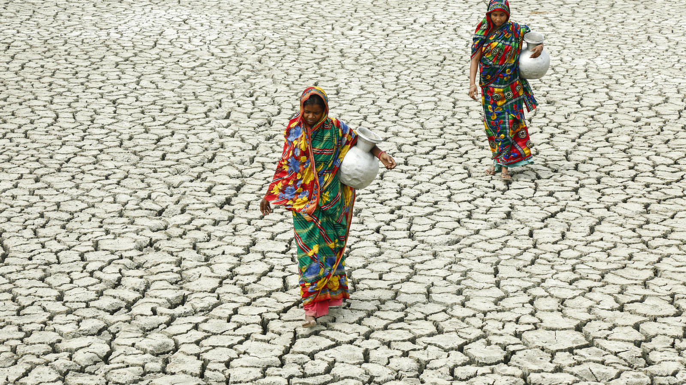

Product features

COLLECTS RAINWATER
The Bigbrella's unique shape and huge size make a perfect rain catcher. Our company has seen the enormous potential that lays in an everyday object such as the umbrella. We have utilized its ability to avoid water, and flipped it upside down to do the opposite; collect water. With the waterproof material of an umbrella, every tiny rain drop will be safe and secure in the Bigbrella.

SOLVES WATER SCARCITY
Because of its size, the Bigbrella can collect water up to x 000 litres. This revolutionary method prevents drinking water from ending up in the sewers and never getting used. The water will be transported to villages where water scarcity is a problem. This way, the Bigbrella is saving thousands of lives.

ENSURES CLEAN WATER
The Bigbrella collects pure rain water directly from the clouds. During transportation, we use sterilized tanks to prevent the water from getting dirty. Sanitation is one of our main values to make sure the Bigbrella water is as pure as when it fell from the sky. Filthy drinking water has big consequences, which the Bigbrella is determined to solve.
The problem
Ensuring clean water to the world’s population is one of UN’s Sustainable Development Goals. One cause of water scarcity is when an area does not have the means to collect clean water, even though the resource is abundant. In Mexico, 70% of the city’s water source comes from aquifer’s that are not able to reliably refill compared to its depletion, due to rainwater being stopped by asphalt and concrete. Meanwhile in India, the people have to line up daily to receive their most basic resource, water.
